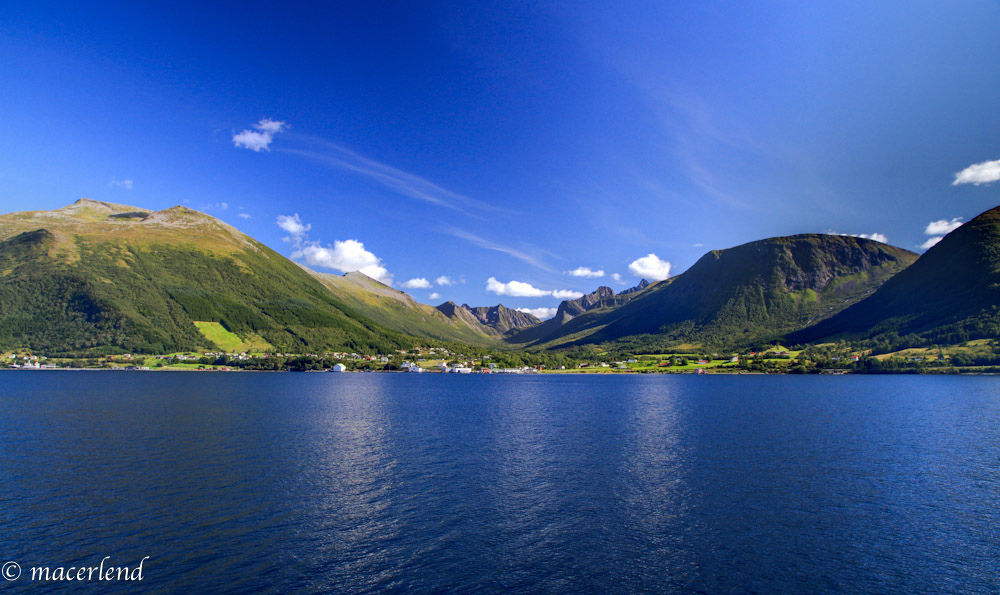

Vartdal
Vartdal er ei lita bygd i hjartet av Sunnmøre, med ca 650 innbyggjarar. Mest kjend for si rike fiskerihistorie, der Vartdal raskt blei meir enn ein liten prikk på kartet, med fleire rederi og store fisketrålarar. BlbalbalbalbalbalbalablblablaBlbalbalbalbalbalbalablblablablablablabla Blbalbalbalbalbalbalablblablablablablabla Blbalbalbalbalbalbalablblablablablablabla Blbalbalbalbalbalbalablblablablablablabla Blbalbalbalbalbalbalablblablablablablabla Blbalbalbalbalbalbalablblablablablablabla Blbalbalbalbalbalbalablblablablablablabla